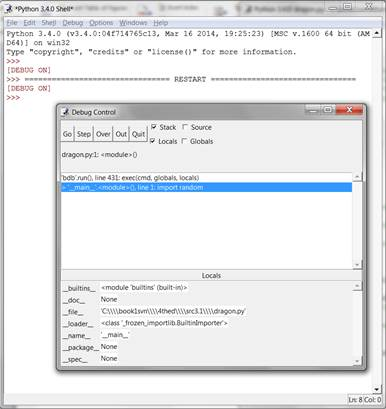
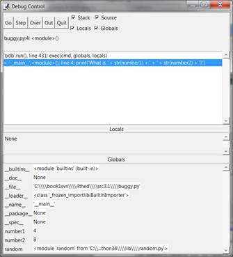
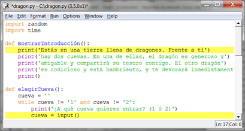
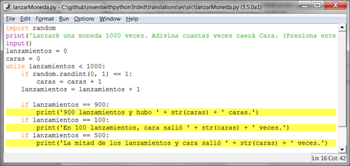

|
|
Capítulo 7 |
Usando el Depurador |

Los tópicos cubiertos en este capítulo:
· 3 tipos diferentes de errores
· Depurador de IDLE
· Entrar en, sobre, salir
· Ir y salir
· Puntos de quiebre
Bugs!
“En dos ocaciones me han preguntado 'Reza, Sr. Babbage ¿si pones en la máquina las figuras incorrectas, saldrán las respuestas correctas?' No consigo comprender correctamente el grado de confusión de ideas que puedan provocar dicha pregunta.”
-Charles Babbage, originador del concepto de una computadora programable, siglo 19.
Si ingresas el código erróneo, la computadora no dará el programa correcto. Un programa de computadora siempre hará lo que tu le digas, pero lo que tu le digas al programa que haga puede que no sea lo que tu quieres que haga. Estos errores son bugs de un programa de computadora. Los bugs ocurren cuando el programador no pensó cuidadosamente lo que el programa hace. Hay tres tipos de bugs que pueden ocurrir en tu programa:
· Errores de Sintaxis, estos provienen de errores de tipografía. Cuando el intérprete de Python vé un error de sintaxis, es porque tu código no se encuentra escrito correctamente en lenguaje Python. Un programa en Python aún con tan sólo un error de sintaxis no correrá.
· Errores de Ejecución, estos ocurren mientras el programa está corriendo. El programa funcionará hasta que alcanza la línea de código con el error y luego el programa terminará con un mensaje de error (eso se le llama colapsar, del ingés “crashing”). El intérprete mostrará un “traceback” (rastreo) y mostrará la línea donde ocurre el problema.
· Errores de Semántica son los más difíciles de solucionar. Estos errores no 'crashean' un programa, pero este no hará lo que el programador espera. Por ejemplo, si el programador desea la variable total sea la suma de los valores en las variables a, b y c pero escribe total = a * b * c, entonces el valor en total será erróneo. Esto podría colapsar el programa más adelante, pero no es inmediatamente obvio donde el error de semántica ocurre.
Hallar los bugs en un programa puede ser árduo ¡si es que siquiera los notas! Cuando corres tu programa, puedes descubrir que a veces ciertas funciones no son llamadas cuando deberían serlo, o tal vez son llamadas demasiadas veces. Puedes condicionar un ciclo while incorrectamente, ocacionando un número de ciclos incorrecto. (Un ciclo que nunca termina en tu programa es llamado ciclo infinito. Para parar este pgorama, puedes presionar Ctrl-C en la consola interactiva.) Cualquiera de estos pueden ocurrir accidentalmente en tu código si no eres cuidadoso.
De hecho, desde la consola interactiva, vé y crea un ciclo infinito al escribir el siguiente código (debes apretar intro dos veces para indicarle a la consola que has terminado de tipear el código del ciclo):
>>> while True:
... print('¡¡¡Presiona Ctrl-C para parar este ciclo infinito!!!')
...
Ahora presione y mantenga la tecla Ctrl y presiona la tecla C para parar el programa. La consola interactiva se verá así:
¡¡¡Presiona Ctrl-C para parar este ciclo infinito!!!
¡¡¡Presiona Ctrl-C para parar este ciclo infinito!!!
¡¡¡Presiona Ctrl-C para parar este ciclo infinito!!!
¡¡¡Presiona Ctrl-C para parar este ciclo infinito!!!
¡¡¡Presiona Ctrl-C para parar este ciclo infinito!!!
Traceback (most recent call last):
File "<pyshell#1>", line 1, in <module>
while True: print('¡¡¡Presiona Ctrl-C para parar este ciclo infinito!!!')
KeyboardInterrupt
El Depurador
Puede ser difícil darse cuenta cómo el código está causando un bug. Las líneas de código se ejecutan rápidamente y los valores en las variables cambian frecuentemente. Un depurador es un programa que te permite correr tu programa una línea de código a la vez en el mismo orden que Python. En depurador tambíen muestra en cada paso cuales son los valores almacenados en las variables.
Iniciando el Depurador
Luego de abrir el archivo dragón.py, presona Debug ► Debugger para hacer aparecer el Debug Control (Control de Depuración) (Figura 7-1).

Figura 7-1: Ventana de Control de Depuración.

Figura 7-2: Coriendo Reino de Dragones bajo el depurador.
Ahora cuando corras el juego Reino de Dragones presionando F5, el depurador IDLE se activará. Esto es conocido como correr un programa “bajo un depurador”. En la Ventana de Debug Control (Control de Depuración), selecciona los campos Source y Globals.
Cuando corres programas en Python con el depurador activado, el programa se frenará antes de ejecutar la primer línea de código. Si presionas sobre la barra del título del editor del archivo (y has seleccionado el campo Source en la ventana del Control de Depuración), la primera línea de codigo estará resaltada en gris. La ventana del Control de Depuración muestra que la ejecución se encuentra en la línea 1, la cual es import random.
Paso a Paso
El depurador te permite ejecutar una línea de código a la vez, llamado paso a paso (stepping en inglés). Para ejecutar una sola instrucción, presiona el botón Step en la ventana del Depurador. Vé y hazlo ahora. Python ejecutará la instrucción import random, y luego parará antes de ejecutar la próxima instrucción. La ventana de control ahora mostrará que la ejecucción ahora se encuentra en la línea 2, en import time. Presiona el botón Quit (Salir) para terminar el programa por ahora.
Aquí hay un resumen de lo que pasa cuando presionas el botón Step mientras corres el juego Reino de Dragones bajo el depurador. Presiona F5 para correr Reino de Dragones otra vez, luego sigue estas instrucciones:
1. Presiona el botón Step dos veces para ejecutar las dos líneas de import.
2. Presiona el botón Step otras tres veces para ejecutar las tres declaraciones def.
3. Presiona el botón Step otra vez para definir la variable jugarDeNuevo.
4. Presiona Go para correr el resto del programa, o presiona Quit para terminar el mismo.
La ventana del Control de Depuración mostrará que linea está por ser ejecutada cuando presiones Step. El depurador salteó la línea 3 debido a que es una línea en blanco. Notar que sólo se puede avanzar con el depurador, no puedes retroceder.
Área Globales
El área de Globales en la ventana de control del depurador es donde se guardan todas las variables globales. Recuerda, las variables globales son aquellas creadas fuera de cualquier función (es decir, de alcalce global).
Debido a que las tres sentencias def ejecutan y definen funciones, aparecerán en el area de globales.
Eĺ texto junto a los nombres de las funciones se verá como "<function explorarCueva at 0x012859B0>". Los nombres de módulos también tienen texto de aspecto confuso junto a ellos, tales como “<module 'random' from 'C:\\Python31\\lib\\random.pyc'>“. Esta información detallada es útil para los programadores avanzados, pero no necesitas saber que significa para depurar tus programas. Tan sólo con ver que las funciones y los módulos se encuentran en el área de globales te dirá que la función fue definida o el módulo importado.
También puedes ingorar las líneas __builtins__, __doc__, and __name__. (Son variables que aparecen en todo programa en Python.)
Cuando la variable jugarDeNuevo es creada, aparecerá en la sección Global. A su lado aparecerá el valor alojado en ella, la cadena 'si'. El depurador te permite ver los valores de todas las variables en el programa mientras el mismo corre. Esto es útil para solucionar bugs en tu programa.
Área Locales
Existe también un área Local, la cuál muestra el ámbito local de las variables y sus valores. El área local sólo tendrá variables cuando la ejecución del programa se encuentre dentro de una función. Cuando la ejecución se encuentre en el ámbito global, esta área estará en blanco.
Los botones Ir y Quitar (Go y Quit)
Si te cansas de presionar el botón Step repetitivamente y solo quieres correr el programa normalmente, presiona el botón Go en la parte superior de la ventana de Control del Depurador. Esto le dirá al programa que corra normalmente en vez de paso a paso.
Para terminar el programa completamente, sólo presiona el botón Quit en la parte superior de la ventana de control. El programa terminará inmediatamente. Esto es útil si necesitas empezar a depurar de nuevo desde el comienzo del programa.
Entrar en, por encima, y salir
Ejecuta el programa Reino de Dragones con el depurador. Ejecuta el programa paso a paso hasta que el depurador se encuentre en la línea 38. Como se muestra en la Figura 7-3, esta es la línea de la función mostrarIntroduccion(). El modo de paso a paso que has estado realizando se llama Entrar En (Stepping Into en ingles), porque el depurador entrará en la función cuando la misma es llamada. Esto es diferente a “Por Encima” (step over), que se explicará luego.

Figura 7-3: Continua el paso a paso hasta la línea 38.
Cuando la ejecución se pause en la línea 5, presionando Step (“Paso” en inglés) una vez más se ingresará en la función print(). La función print() es una de las funciones incorporadas de Python, así que no es muy útil ingresar en ella con el depurador. Las funciones propias de Python como print(), input(), str(), o random.randint() ya fueron revisadas por errores. Puedes asumir que no son las partes causantes de bugs en tu programa.
Así que no quieres perder tiempo ingresando en el interior de la función print(). Entonces en vez de presionar Step para ingresar en el código de la función print(), presiona Over. Esto pasará por encima el código dentro de la función print(). El código dentro de print() será ejecutado a velocidad normal, y luego el depurador se pausará una vez que la ejecución vuelva de print().
Pasar por encima es una manera conveniente de evitar pasar por código dentro de una función. El depurador ahora estará pausado en la línea 40, la línea con númeroDeCueva = elegirCueva().
Presiona Step una vez mas para ingresar en la función elegurCueva(). Continua el paso a paso hasta la línea 15, la llamada a input(). El programa esperará hasta que ingreses una respuesta en la shell interactiva, tal como lo haría corriendo el programa normalmente. Si intentas presionando Step, nada pasará porque el programa esperará una respuesta del teclado.
Vé a la consola interactiva y tipea cuál cueva deseas explorar. El cursor parpadeante debe estar en la línea inferior en la consola interactva antes de que puedas tipear. Caso contrario el texto que ingreses no aparecerá.
Una vez que presiones intro, el depurador continuará el paso sobre las líneas. Presiona el botón Out en la ventana de control. A esto se le llama Salir (Stepping Out) porque hará que el depurador corra cuantas líneas sean necesarias hata salir de la función en la que se ecuentra. Luego de que sale, la ejecución debe estar en la línea siguiente a la línea que llamó la función.
Por ejemplo, al presionar Out dentro de la función mostrarIntroducción() en la línea 6, se correrá hasta que la función retorne a la línea posterior a la llamada a mostrarIntroducción().
Si no te encuentras dentro de una función, presionar Out hará que el depurador ejecute todas las líneas restantes del programa. Este es el mismo comportamiento a presionar el botón Go.
Aquí un resumen de lo que cada botón hace:
· Go - Ejecuta el resto del código normalmente, o hasta que alcanza un punto de quiebre (break, que será descripto luego).
· Step - Ejecuta una línea de código. Si la línea es una llamada a una función, el depurador ingresará dentro de la función.
· Over - Ejecuta una línea de código. Si la línea es una llamada a una función, el depurador no ingresará dentro de la función.
· Out - Ejecuta líneas de código hasta que el depurador salga de la función en la que estaba cuando se presionó Out. Esto sale de la función.
· Quit - Termina el programa inmediatamente.
Encuentra el Bug
El depurador puede ayudarte a encontrar la causa de bugs en tu programa. Por ejemplo, aquí hay un pequeño programa con un bug. El programa brinda un problema de suma aleatoria para que el usuario resuelva. En la consola interactiva, presiona en File, luego en New Window para abrir un nuevo editor de archivos. Tipea este programa en dicha ventana, y guarda el programa como bugs.py.
bugs.py
1. import random
2. numero1 = random.randint(1, 10)
3. numero2 = random.randint(1, 10)
4. print('¿Cuánto es ' + str(numero1) + ' + ' + str(numero2) + '?')
5. respuesta = input()
6. if respuesta == numero1 + numero2:
7. print('¡Correcto!')
8. else:
9. print('¡Nops! La respuesta es ' + str(numero1 + numero2))
Tipea el programa exáctamente como se muestra, incluso si ya sabes cuál es el bug. Luego intenta corer el programa presionando F5. Este es una simple pregunta aritmetica que te pide sumer dos números aleatorios. Aquí es lo que es posible que veas al correr el programa:
¿Cuánto es 5 + 1?
6
¡Nops! La respuesta es 6
¡Eso es un bug! El programa no colisiona pero no está trabajando correctamente. El programa dice que el usuario está equivocado incluso si ingresa la respuesta correcta.
Correr el programa en un depurador ayudará a encontrar la causa del bog. En la parte superior de la consola interactiva, presiona Debug ► Debugger para mostrar el control del depurador. En ella, selecciona las cuatro casillas (Stack, Source, Locals, y Globals). Esto hará que la ventana de control provea la mayor cantidad de información. Luego presiona F5 en la ventana del editor para correr el programa. Esta vez correra bajo el depurador.
1. import random
El depurador comenzará en la línea import random. Nada especial sucede aquí, así que presiona Step para ejecutarlo. Verás que el módulo random es agregado al área de globales (Globals).
2. numero1 = random.randint(1, 10)
Presiona Step otra vez para ejecutar la línea 2. Una nueva ventana de edición aparecera con el archivo random.py . Has ingresado dentro de la función randint() dentro del módulo random. Las funciones incorporadas en Python no serán fuente de tus errores, así que puedes presionar Out para salir de la función randint() y volver a tu programa. Luego cierra la ventana de random.py.
3. numero2 = random.randint(1, 10)
La próxima vez, puedes presionar Over para saltar la función randint() en vez de ingresar en ella. La línea 3 también es una llamada a randint(). Evita ingresar en su código presionando Over.
4. print('¿Cuánto es ' + str(numero1) + ' + ' + str(numero2) + '?')
La línea 4 es una llamada a print() para mostrarle al jugador los números aleatorios. ¡Tu sabes que números el programa mostrará incluso antes de que los imprima! Tan sólo mira el área de globales en la ventana de contro. Puedes ver las variables numero1 y numero2, y a su lado los valores enteros guardados en ellas.
La variable numero1 posee el valor 4 y la variable numero2 el valor 8. Cuando presiones Step, el programa mostrará la cadena en la llamada print() con estosvalores. La función str() concatenará las versiones cadena de estos enteros. Cuando corrí el depurador, se vió como la Figura 7-4. (Tus valores aleatorios probablemente sean diferentes.)

Figura 7-4: numero1 establecido en 4 y numero2 en 8.
5. respuesta = input()
Presionando Step desde la línea 5 ejecutará input(). El depurador esperará hasta que el jugador ingrese una respuesta al programa. Ingresa la respuesta correcta (en mi caso, 19) en la consola interactiva. El depurador continuará y se moverá a la línea 6.
6. if respuesta == numero1 + numero2:
7. print('¡Correcto!')
La línea 6 es un condicional if. La condición es que el valor en la respuesta debe coincidir con la suma de numero1 y numero2. Si la condicion es True, el depurador se moverá a la línea 7. Si es False, el depurador se moverá a la línea 9. Presiona Step una vez mas para descubrir adonde se moverá.
8. else:
9. print('¡Nops! La respuesta es ' + str(numero1 + numero2))
¡El depurador ahora se encuentra en la línea 9! ¿Que sucedió? La condición en el if debe haber sido False. Mira los valores en numero1, numero2, y respuesta. Nota que numero1 y numero2 son enteros, así que su suma también debe ser un entero. Pero respuesta es una cadena.
Esto significa que respuesta == numero1 + numero2 debio ser evaluado como '12' == 12. Una valor cadena y un valor entero siempre serán no iguales, así que la condición se evalua como False.
Este es el bug en el programa. El bug está en que usamos una respuesta cuando debimos usar int(respuesta). Cambia la línea 6 para usar int(respuesta) == numero1 + numero2 en vez de respuesta == numero1 + numero2, y corre el programa.
¿Cuanto es 2 + 3?
5
¡Correcto!
Esta vez, el programa funcionó correctamente. Córrelo una vez más e ingresa una respuesta errónea a propósito. Esto comprobará el programa completamente. ¡Ahora habrás depurado este programa! Recuerda, la computadora correrá tus programas exactamente como los tipeaste, incluso si lo que tipeaste no es lo que querias.
Puntos de Quiebre
Ejecutar el código una línea a la vez puede ser demasiado lento. Con frecuencia quieres correr el programa normalmente hasta que alcance cierta línea. Un punto quiebre se establece en una línea donde quieres que el depurador tome el control una vez que la ejecución alcanzó dicha línea. Si crees que hay un programa en tu código, digamos, en la línea 17, tan sólo estableces un punto de quiebre en esa línea (o tal vez unas líneas atrás).
Cuando la ejecución alcance esa línea, el depurador “romperá hacia el depurador”. Luego podrás correr las líneas una a la vez para ver que sucede. Presionar Go ejecutará el programa normalmente hasta que alcance otro punto quiebre o el final del programa.
Para establecer un punto quiebre, en el editor de texto haz click derecho sobre una línea y selecciona Set Breakpoint en el menú. Ahora el editor resaltará la línea en amarillo. Puedes establecer tantos puntos quiebre como desees. Para remover uno, clickea en la línea y selecciona Clear Breakpoint en el menú que aparece.

Figura 7-5: El editor con dos puntos quiebre establecidos.
Ejemplos de Puntos Quiebre
Aquí una programa que simula lanzamientos de moneda llamando un random.randint(0,1). La función al retornar 1 será “cara” y 0 será “cruz”. La variable lanzamientos registará cuantos lanzamientos se efectuaron. La variable cara registará cuantos han salido cara.
El programa hará “lanzamientos de moneda” mil veces. Esto le tomaría a una persona más de una hora. ¡Pero la computadora puede hacerlo en un segundo! Escribe el siguiente código en el editor y guardalo como lanzarMoneda.py. También puedes descargar este código desde http://invpy.com/es/lanzarMoneda.py.
Si obtienes errores luego de escribir este código, compáralo con el código del libro con la herramienta online diff en http://invpy.com/es/diff/lanzarMoneda.
lanzarMoneda.py
1. import random
2. print('Lanzaré una moneda 1000 veces. Adivina cuantas veces caerá Cara. (Presiona enter para comenzar)')
3. input()
4. lanzamientos = 0
5. caras = 0
6. while lanzamientos < 1000:
7. if random.randint(0, 1) == 1:
8. caras = caras + 1
9. lanzamientos = lanzamientos + 1
10.
11. if lanzamientos == 900:
12. print('900 lanzamientos y hubo ' + str(caras) + ' caras.')
13. if lanzamientos == 100:
14. print('En 100 lanzamientos, cara salió ' + str(caras) + ' veces.')
15. if lanzamientos == 500:
16. print('La mitad de los lanzamientos y cara salió ' + str(caras) + ' veces.')
17.
18. print()
19. print('De 1000 lanzamientos, al final cara salió ' + str(caras) + ' veces!')
20. print('¿Estuviste cerca?')
El programa corre bastante rápido. Toma más tiempo esperar a que el usuario presione intro que realizar los lanzamientos. Digamos que deseamos ver los lanzamientos de moneda uno a uno. En la consola interactiva, presiona Debug ► Debugger para abrir la ventana de control del depurador. Luego presiona F5 para correr el programa.
El programa comienza dentro del depurador en la línea 1. Presiona Step tres veces en la ventana de control para ejecutar las primeras tres líneas (estas son, líneas 1, 2 y 3). Notaras que los botones se deshabilitaran porque la función input() fue llamada y la consola interactiva está esperando al usuario. Clickea en la ventana de la consola y presiona intro. (Asegúrate de presionar debajo del texto en la consola interactiva, de lo contrario puede que IDLE no reciba tu tecla.)
Puedes presionar Step un par de veces mas, pero te encontarás que tardará un tiempo atravesar todo el programa. En vez, establece un punto de quiebre en las líneas 12, 14 y 16. El editor resaltará estas tres líneas como se muestra en la Figura 7-6.

Figura 7-6: Tres puntos quiebre establecidos.
Luego de establecer los puntos quiebre, presiona Go en la ventana de control. El programa correrá a velocidad normal hasta toparse con el siguiente punto quiebre. Cuando lanzamientos se encuentra en 100, el condicional del if en la línea 13 es True. Esto causa que la línea 14 (donde tenemos un break point) se ejecute, lo que le dice al depurador que frene el programa y tome el control. Mira la ventana de control del depurador en la sección de Globales para ver cuál es el valor de lanzamientos y caras.
Presiona nuevamente Go y el programa continuará hasta el siguiente punto quiebre en la línea 16. Otra vez, mira cómo los valores en lanzamientos y caras han cambiado.
Si presionas Go otra vez, la ejecución continuará hasta el último punto quiebre en la línea 12.
Resumen
Escribir un programa es sólo la primer parte de programar. La siguiente parte es cerciorarse que lo escrito realmente funciona. Los depuradores te permiten atravesar el código una línea a la vez. Puedes examinar qué lineas se ejecutan en qué orden, y qué valores contienen las variables. Cuando esto es demasiado lento, puedes establecer puntos de quiebre para frenar el depurador sólo en las línas que deseas.
Utilizar el depurador es una gran forma de entender exactamente lo que el programa está haciendo. Mientras que este libro explica todo el código dentro del mismo, el depurador puede ayudarte a encontrar más por tu cuenta.